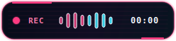

Segure F8, fale, solte.
O texto aparece onde você está.
Ditado por voz com IA que roda inteiramente na sua máquina. O Cortex Whisper grava,
transcreve localmente com faster-whisper e cola o resultado no aplicativo que
já está em foco. Nenhum áudio sai do seu computador.
Gratuito e open source sob licença MIT. Sem conta, sem assinatura, sem telemetria.
Como funciona
Quatro segundos entre a fala e o texto
Sem janela pra abrir, sem botão pra clicar. O overlay compacto aparece centralizado na tela ativa e some sozinho.

Coloque o cursor onde quiser
Chat, editor de código, campo de e-mail, terminal. O Cortex Whisper não rouba o foco da janela ativa.
Segure a tecla e fale
F8 por padrão, configurável entre F6 e F12. Um atalho global, funciona de qualquer aplicativo.
Solte e receba o texto
O modelo Whisper roda na sua CPU (ou GPU CUDA, se disponível) e o texto é colado automaticamente.
Recursos
O que vem na caixa
Atalho global hold-to-talk
Segure para gravar, solte para transcrever. Tecla configurável de F6 a F12.
100% local
O áudio é processado em memória pelo faster-whisper e nunca é gravado em disco nem enviado a servidores.
Modelos small e medium
Escolha entre velocidade e precisão. A seleção fica salva entre sessões.
CPU com int8, CUDA se houver
Inferência quantizada em int8 na CPU, com tentativa automática de CUDA quando a GPU está disponível.
Seleção de microfone
Escolha a entrada de áudio e valide com um teste embutido de três segundos.
Overlay neon compacto
Estados de gravação, transcrição, sucesso e erro, sempre centralizados no display ativo.
Colagem automática
O texto vai para a área de transferência e é colado no aplicativo em foco via wl-clipboard e ydotool.
Bandeja, pausa e logs
Controles na bandeja do sistema, modo pausa, logs rotativos e inicialização automática opcional.
Modo GUI e terminal
Use a interface gráfica ou rode com --no-gui direto do terminal.
Privacidade
Sua voz não vai a lugar nenhum
Não existe servidor de aplicação. Não existe conta. Não existe telemetria. A única conexão de rede possível é o download do modelo Whisper na primeira execução.
Áudio em memória
A gravação é processada localmente e descartada. Nada é salvo em disco.
Logs sem conteúdo
Os logs registram eventos operacionais e contagem de caracteres — nunca o texto transcrito.
Modelo baixado uma vez
O Hugging Face é contatado apenas quando um modelo ainda não está no cache local. Depois disso, funciona offline.
Onde os dados ficam
| Dado | Linux | Windows |
|---|---|---|
| Configuração | ~/.config/CortexWhisper/config.json | %LOCALAPPDATA%\CortexWhisper\config.json |
| Logs | ~/.local/state/CortexWhisper/log/ | %LOCALAPPDATA%\CortexWhisper\Logs\ |
| Modelos | Cache de usuário do Hugging Face | |
Compatibilidade
Status por plataforma
A versão 0.2.0 Beta é desenvolvida para Linux com GNOME/Wayland. Atualmente recomendamos executar pelo código-fonte; Flatpak, .deb e Windows continuam experimentais. macOS não está implementado.
| Plataforma | Status | Observações |
|---|---|---|
| Linux / GNOME Wayland | Testado | Plataforma principal de desenvolvimento |
| Linux / X11 | Implementado | Precisa de testes mais amplos |
| Windows 10/11 | Experimental | Build e instalador existem, mas faltam testes em hardware real |
| macOS | Não suportado | Integração com a plataforma ainda não foi implementada |
Instalação
Colocando pra rodar no Linux
1. Baixe e execute o código — recomendado
Esta é atualmente a forma mais estável de testar o Cortex Whisper. Requer Python 3.10 ou mais recente.
git clone https://github.com/matheusz-nied/cortex-whisper.git
cd cortex-whisper
python3 -m venv venv
source venv/bin/activate
python -m pip install -r requirements.txt
python cortex_whisper.py2. Ative a colagem automática
sudo apt install ydotool
systemctl --user enable --now ydotool.serviceNas configurações, mantenha Start minimized with the system ativado e clique em Save. O app criará a entrada de autostart do seu usuário.
grep '^Exec=' ~/.config/autostart/io.github.matheusz_nied.CortexWhisper.desktop
O app inicia automaticamente depois que você entra na sua conta. Não mova o repositório nem o venv, pois o autostart aponta para esses caminhos.
3. Pacotes em desenvolvimento
Flatpak e .deb ainda têm problemas de integração com áudio e portais do desktop. Use-os somente para testes.
Linha de comando
./venv/bin/python cortex_whisper.py --help
./venv/bin/python cortex_whisper.py --list-microphones
./venv/bin/python cortex_whisper.py --diagnostics
./venv/bin/python cortex_whisper.py --no-gui --model mediumDownload
Cortex Whisper 0.2.0 Beta
Estes pacotes são prévias para desenvolvimento e testes. Para uso normal, instale pelo código-fonte seguindo as instruções acima.
Confira os hashes no arquivo SHA256SUMS publicado junto da release.
Todas as versões ficam disponíveis na
página de releases.
Perguntas frequentes
Antes de instalar
Em que idioma ele transcreve?
A transcrição vem configurada para português (pt), que foi o caso de uso original do projeto. A interface do aplicativo está em inglês.
Preciso de GPU?
Não. A inferência roda na CPU com quantização int8. Se uma GPU com CUDA estiver disponível, o app tenta usá-la automaticamente.
Funciona offline?
Sim, depois que o modelo é baixado. A única conexão necessária é o download inicial do modelo Whisper pelo Hugging Face.
Por que o overlay fica no centro da tela?
O Wayland impede que aplicativos comuns leiam a posição global do ponteiro. Centralizar o overlay é a abordagem confiável em configurações com múltiplos monitores.
A colagem automática não funciona. E agora?
No Wayland, a colagem depende do serviço de usuário do ydotool estar ativo. Confirme com systemctl --user status ydotool.service e rode ./venv/bin/python cortex_whisper.py --diagnostics.
Quando sai a versão para Windows e macOS?
O build de Windows já existe, mas ainda não foi validado em hardware real. macOS ainda não tem a integração de plataforma implementada. Acompanhe pelo repositório.